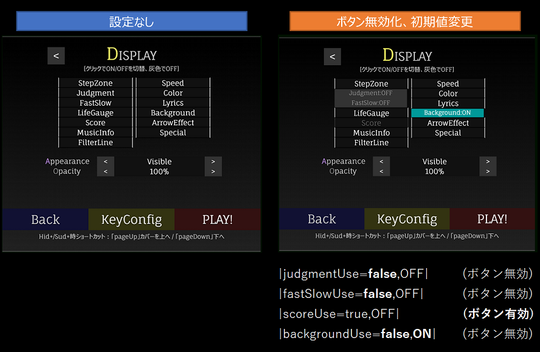

|stepZoneUse=false|
|judgmentUse=false|
|fastSlowUse=false|
|lifeGaugeUse=true,OFF| <- ボタン有効, 初期値OFF
|scoreUse=false|
|musicInfoUse=false,ON| <- ボタン無効, 初期値ON
|filterLineUse=false|
|speedUse=false|
|colorUse=false|
|lyricsUse=false|
|backgroundUse=false|
|arrowEffectUse=false|
|specialUse=false|
設定画面のDisplayオプションの項目を作品の都合上使用させない場合に使用します。
falseにすると、OFFにするだけでなくON/OFF設定自体が無効化されます。
v13のみ互換性保持のため、|judgementUse=false|を指定した場合のみ、
judgmentUse=false, fastSlowUse=false, scoreUse=falseの3種類を指定した効果と同じになります。
(v14以降は非対応)
v14より、カンマ区切りで2番目の要素を指定できます。
これにより、ON/OFF設定を有効化しつつ、デフォルトをOFFにするといった設定が可能となります。
| 番号 | 設定例 | 内容 | 既定値 |
|---|---|---|---|
| 1 | false | 設定変更可・不可設定 (true: 設定変更可, false: 設定変更不可) | true |
| 2 | OFF | Display設定の初期値 (ON, OFF) | OFF |

g_presetSettingUseで作品共通に指定できます。const g_presetSettingUse = {
stepZone: `true`,
judgment: `true`,
fastSlow: `true`,
lifeGauge: `true,OFF`, // 複数指定の場合はこのようにカンマを入れて繋げる
score: `true`,
musicInfo: `false,ON`, // 複数指定の場合はこのようにカンマを入れて繋げる
filterLine: `true`,
speed: `true`,
color: `true`,
lyrics: `true`,
background: `true`,
arrowEffect: `true`,
special: `true`,
};
| Version | 変更内容 |
|---|---|
| v14.0.2 | ・displayUseの2要素目（ボタンの初期値設定）を追加 |
| v13.5.0 | ・Display:FilterLine追加に伴う項目追加 |
| v13.4.0 | ・Display:Judgmentの種別細分化に伴う項目追加 |
| v11.0.0 | ・初回実装 |